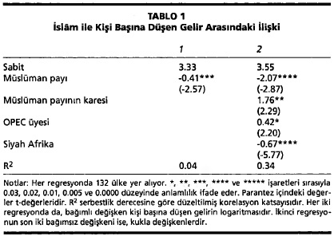
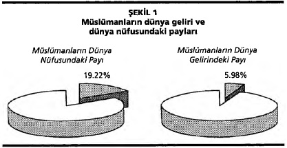

İSLAM VE GERİ KALMIŞLIK:
ESKİ BİR MUAMMAYA ÇÖZÜM ARAYIŞLARI{*}
Giriş
Türkiye'de cumhuriyetin ilân edildiği 29 Ekim 1923 tarihinde Atatürk, kültür ve din hakkındaki görüşlerini soran bir gazeteciye, dinin ilerlemeye engel oluşturması gerekmediğini belirterek, Türk ulusunun dindar kalmasını istediğini söylemişti. Ne var ki, Atatürk, yurttaşlarının çoğunun "hurafelere karışmış suni bir din" tarafından baskı altında tutulduğunu da sözlerine eklemişti.1Türkiye, onun önderliğinde halifeliği kaldıracak ve lâikliği temel bir ilke olarak benimseyecekti.
Atatürk, İslâm'ın, en azından halk İslâmı'nın, mantıksız ve geriletici olduğu inancında yalnız değildi.Zamanın aydın Müslümanlarının çoğu, Batılılarm büyük bölümü gibi, onun görüşlerine katılıyordu.Birçok kimseye göre, İslâm'ın ekonomik kalkınmaya yardımcı olmadığı, en azından Batı uygarlığı kadar yardımcı olmadığı apaçıktı.Müslümanların çok büyük bir bölümü okuma-yazma bilmezken, Batı çoktan kitle eğitimine geçmişti.Az sayıda Müslüman, Batı'da üretim süreçlerini değiştiren, yeni tüketim eşyaları getiren ve yaşama koşullarını iyileştiren buluş ve yeniliklere değer veriyordu; bu gelişmelerden yararlanabilen Müslümanların sayısı ise daha da azdı.İslâm dünyasında dış ticaret, hatta iç ticaret bile büyük ölçüde Avrupalıların denetimi altındaydı ve onları daha çok dini azınlık mensupları temsil etmekteydi. Müslümanlar pek az sayıda banka kurmuşlardı ve devletlerinin hazineleri boştu.Avrupa'nın süregiden ilerleyişiyle İslâm dünyasının geri kalmışlığı arasındaki karşıtlık, İslâm'ın İktisadi yeniliklerin karşısında olduğunu düşündürecek kadar çarpıcıydı.
Bugün ise, nüfusunun çoğunluğu Müslüman olan kimi ülkeler, Dünya Bankası'nm yüksek gelirli ülkeler sıralamasında yer alırken, bir bölümü de orta gelirli ülkeler sınıfındadır.Öte yandan, en yoksul ülkeler sınıfı içinde nüfusunun çoğunluğunu Müslümanların oluşturduğu birçok ülke bulunmaktadır.Öyleyse konuya bilimsel bir bakış açısıyla yaklaşıldığında, İslâm ve İktisadi kalkınma arasında bir neden-sonuç ilişkisinin bulunup bulunmadığını soruşturmak doğaldır.Sayısal verilere dayanan bir bağıntının bir neden sonuç ilişkisini gerektirmediğine hemen dikkati çekelim.Bir neden-sonuç ilişkisinin ortaya konması en az bir mekanizmanın saptanmasını gerektirir.Bu denemenin amacı, ortaya atılan kimi mekanizmaları sınıflandırmak, eleştirmek ve bunları Türkiye'nin İslâm'ın toplumsal gücünü sınırlamak amacıyla resmen lâikleştiği dönemde gözde olan kaba savlardan ayırmaktır. Denemenin sonunda birleştirici bir kuram için zemin hazırlanacaktır.İslâm'ın küresel ilişkilerdeki önemine rağmen, bu konuyla ilgili oldukça az yayın yapılmaktadır.Göz önünde tutulması gereken bir başka önemli nokta da şu: Yakın zamanda kalkınma üzerine yazılmış kitaplarda, din ile ekonomik kalkınma arasında bağlantılar pek incelenmemekte, hele İslâm'ın ekonomik rolü konusuna hiç değinilmemektedir.2
İslâm ile kalkınma arasındaki bağlantılara gösterilen bilimsel ilginin az olmasının bir nedeni, iktisat ile din arasında bilimsel bir bağ kurulmasının pek alışılmamış bir durum olmasıdır. İktisatçılar, hatta İslâm dünyasıyla yakın ilişkisi olan iktisatçılar bile, genellikle dinin bilimsel açıdan incelenmesi konusunda bilgisizdir; birçoğu rakamlarla gösterilmesi zor olan kültürel değişkenleri görmezden gelme ve bunların olumlu ya da olumsuz hiçbir ekonomik etkisi yokmuşçasına fikir yürütme alışkanlığındadır.Öte yandan, İslâm dünyasının dilleri, tarihi ya da siyaseti üzerinde öğrenim görmüş araştırmacılar iktisattan pek anlamamaktadır.Sözü edilen bağıntıyla ilgili bilimsel çözümlemelerin azlığının bir başka nedeni de, 1930'lu yılların antropoloji araştırmalarıyla ivme kazanan, kültürlerin birbirleriyle karşılaştırılamayacağı fikri doğrultusundaki eğilimleri kapsayan "kültürel görecelik"tir.Kültürel görecilik her kültürün kendi kriterlerine göre incelenmesi gerektiği görüşünü savunmakla, kültürel değişkenlerin ekonomik etkisi üzerindeki karşılaştırmalı araştırmaları kösteklemiştir.İslâm'ın ekonomik etkisi konusundaki araştırmaların pek az oluşunun bir başka nedeni de Müslüman düşmanı olduğu sanılan çevreleri yüreklendirmekten kaçınma çabalarında yatar.3
Bu denemede ortaya konulan kimi bulgularla savlar şüphesiz art niyetli gruplarca sömürülebilir.Ancak, bu tehlike, dürüst bir incelemeden kaçmak ya da rahatsızlık yaratabilecek verileri örtbas etmek için yeterli bir neden oluşturmaz.Kendi kendimizi sansür etmenin başlıca kurbanları, korunmaya çalışılan kesimler olabilir.Yerleşik İslâmiyet karşıtı önyargıların ölçüsü ne olursa olsun, bu önyargılar sıkıntı yaratabilecek olasılıkları görmezden gelmekle ortadan kalkmayacaktır. Tam tersine, mitleri yıkan serinkanlı bir çözümleme dinsel önyargılara karşı bir panzehir görevi görebilir.
Açıklama bekleyen istatistik ve eğilimler
132 ülkenin ekonomik durumunun ele alındığı 1995 Dünya Kalkınma Raporu'na dayanan Tablo 1, ekonomik performansla İslâm arasında bir bağlantı kurulabileceğini destekleyen kimi kanıtlar sunuyor.Her regresyonda bağımlı değişken, kişi başına düşen gelirin logaritmasıdır.4İlk regresyondaki tek bağımsız değişken 1995 Britannica Yıllığı'ndan5 alınan, Müslümanların toplam nüfus içindeki payıdır.6 Bu regresyon iki değişken arasında ters' bir istatistiksel ilişki olduğunu gösteriyor, ancak ilişkinin zayıf olduğu ortadadır.
Birden çok bağımsız değişkenin bulunduğu ikinci regresyonda daha güçlü bir bağ görülüyor.Petrol karteli OPEC üyeliğinin gelire önemli ölçüde katkıda bulunan bir etmen olmasına karşılık, dünyanın en yoksul bölgesi olan Siyah Afrika oldukça zayıflatıcı bir etmendir.Müslümanların nüfus içindeki oranı, ilk regresyonda olduğu gibi, gelir açısından çok belirgin bir olumsuz etmen olarak görünmekte. Bu oranın karesi istatistik yönünden önemlidir, ki bu durum U şeklindeki bir fonksiyonun verilere doğrusal bir fonksiyondan daha uygun olduğunu ortaya koyar.İkinci regresyonun saptadığı eğrilik büyük Müslüman azınlıklarına sahip Afrika, Güney Asya ve Doğu Asya ülkelerinin, genellikle Ortadoğu'da bulunan, nüfusunun çoğunluğu Müslüman olan ülkelerden daha yoksul olduğu gerçeğini yansıtıyor.7
Küresel gelirdeki Müslüman payı bütünleyici bir kanıt sunar.Her ülkenin Müslümanları ortalama olarak kişi başına düşen ortalama geliri elde etselerdi, bir önceki soruda kullanılan veriler küresel gelirdeki Müslüman payının yüzde 5.98 olduğunu gösterecekti.1.Şekil'de görüldüğü gibi, bu pay yüzde 19.22 olan küresel nüfustaki Müslüman payının çok altındadır. Müslümanlarla gayrimüslimlerin her ülkede aynı ortalama geliri elde ettikleri varsayımı tabii ki gerçekçi değildir.Müslüman payının önemli olduğu ülkelerin çoğunda, Müslümanlar genellikle gayrimüslimlerden daha yoksuldur.Öyleyse saptamaya çalıştığımız farklılık, 1.Şekil'de görülenden de büyük olabilir.
Ek veriler elde ederek, yeni değişkenler bularak ve kalkınma düzeyini daha ince ölçütlerle hesaplayarak bu istatistik çalışmaları geliştirilebilir.Ancak bu tür çalışmaların genel görüntüyü değiştirmesi beklenemez.Zaten buradaki amaç yalnızca Müslümanların görece yoksul olduğu gerçeğini açıklamak için ortaya atılan nedensellikleri eleştirmektir.
İster kişi başına düşen gelirle, ister ticaret, okuryazarlık, bilim, araştırma, teknoloji gibi değişkenlerle ölçülsün, ekonomik kalkınma düzeyinin İslâm dünyasında Batı'ya oranla çoktandır daha düşük olduğunu pek az kimse inkâr edecektir.8On dokuzuncu yüzyılın ortalarında bu karşıtlığı Türk aydını Ziya Paşa ünlü bir beyitinde şöyle dile getirmişti:
Diyâr-ı küfrü gezdim beldeler kâşâneler gördüm
Dolaştım mülk-i İslâm'ı bütün viraneler gördüm9
Ancak, Batı'nın ekonomik üstünlüğünün ne zaman başladığı konusunda görüş farklılıkları bulunmaktadır.Birçok İslâm ülkesinin on sekizinci yüzyıla kadar Avrupa'ya askeri açıdan meydan okuduğu gerçeğini temel alan, Batı'nın on yedinci yüzyıla, hatta daha sonraya kadar ekonomik üstünlüğü ele geçiremediği yolunda gözde bir görüş vardır.10Kalkınmanın tanımı ve Batı'nın İslâm dünyasını geçtiği kesin tarih ne olursa olsun, Batı'nın arayı kapatma süreci aslında çok daha gerilere uzanır.İslâm dünyası onuncu yüzyıl dolaylarında Batı'dan daha ilerideydi.On yedinci yüzyılda durum tersine dönmüşse, bunun nedeni, Avrupa'nın yüzyıllar önce, sonradan muazzam ekonomik avantajlar sağlayacak köklü toplumsal dönüşümler geçirmeye başlamasıdır.11Avrupa yaklaşan Sanayi Devrimi'nin ön koşullarını hazırlarken İslâm uygarlığı da elbette kendi içinde dönüşümler geçiriyordu.Ayrıca, İslâm dünyasının ekonomik konumundaki göreli gerilemenin, İspanya, Anadolu ve başka yerlerde görülen ekonomik canlanmalarla geçici olarak durdurulduğu gözden kaçırılmamalıdır.Yine de, son bin yılın büyük bir bölümünde göreli konumunu düzelten veya ilerleten taraf Batı'ydı.
İslâm dünyası bir zamanlar ekonomik açıdan Batı'nın ilerisinde bulunduysa, bunun bir nedeni bilimsel ve teknolojik yenilikler açısından ön sırada bulunmasıydı.On üçüncü yüzyılda İslâm dünyasındaki bilim ve yaratıcılık doruk noktasını geçmişti.Bu gerileyişin anlamlı bir göstergesi, Türkiye'deki İslâmcı bir yayımcının çıkardığı Müslüman İlim Öncüleri Ansiklopedisi'nde12 yer alan büyük bilim adamlarının dağılımıdır.Bu ansiklopedide adı geçen bilim adamlarının yüzde 64'ü çığır açan yapıtlarını 1250'den önce, yüzde 36'sı da 1250-1750 döneminde oluşturmuştur; biri bile 1750'den sonra yaşamamıştır.13Dünyanın önde gelen bilim adamları arasında bugün Müslümanlar da bulunmaktaysa da, bilime ve yeniliklere katkıda bulunan Müslümanların oranı dünya nüfusundaki Müslüman oranına göre düşüktür.Bu konuyla ilgili pek çok veri sunulan bir kitapta Pervez Hoodbhoy,14 Arap dünyasında kişi başına düşen bilimsel üretimin İsrail'dekinin ancak yüzde biri olduğunu belirtiyor.Araplar Müslümanların yalnızca yüzde 20'sini oluşturmaktaysa da, bu karşılaştırmanın İslâm dünyasının bilimin ilerlemesine bugünkü katkısını kabaca gösterdiği akla yatkındır.
Michael Cook,15 Roger Owen16 ve daha başkalarının gözlemlediği gibi, İslâm dünyası görece gerilerken de büyümeye devam etmiştir. Onların bu gözlemleri yaygın büyümeyle yoğun büyüme arasındaki farka dikkati çekiyor.Yaygın büyüme nüfus artışının kişi başına düşen geliri arttırmadan toplam geliri arttırmasıyla gerçekleşir, ki bu tarihin başlangıcından beri görülen bir büyüme biçimidir.Yoğun büyüme ise, kişi başına düşen geliri arttırır; ekonomik kalkınmayla özdeşleştirdiğimiz teknolojik, örgütsel, kurumsal, algısal ve ahlâki değişiklikleri içermekte olup, pek seyrek görülmektedir.17Bu ayırım açısından burada bizi ilgilendiren, İslâm dünyasının yaygın büyümesinden çok, Orta Çağ'da başlayan ve uzun süredir görece zayıf kalan yoğun büyümesidir.
Üç sav
Yukarıdaki örnekler üzerinde kafa yoran bilim adamlarının getirdiği açıklamalar üç sınıfa ayrılıyor.
İktisadi bağlantısızlık savı
İktisadi bağlantısızlık savı olarak adlandırabileceğimiz birinci sınıf, Müslümanların ekonomik başarılarının İslâm dininin kendisiyle ilgili olmadığı yolundaki görüşlerden oluşuyor.Bu savın en etkili savunucusu Maxime Rodinson'dur.18Rodinson, İslâm'ın ana kaynaklarında çok sayıda ekonomik öğreti bulunduğuna işaret ederek, bunların hiçbirinin ekonomik seçimleri önemli ölçüde kısıtlamadığını ileri sürer.Ona göre, Müslümanlar bu öğretilerden işlerine geleni ayırıp seçebilmişler, hatta koşullar değiştikçe kimisini kolayca yeniden yorumlayabilmişlerdir. Rodinson, İslâm uygarlığının uzun süren ekonomik bir düşüş geçirdiğini inkâr etmemekle birlikte, bu düşüşün İslâmi inançlar ve değerlerden kaynaklarıdığını reddederek, maddi koşullardaki değişimlerin sonucu olduğunu ve İslâm dünya görüşüyle ahlâkının bu değişimlere uyarlandığını öne sürer.Ona göre, Müslümanlar kimi dönemlerde kendilerini yoksulluğa teslim etmiş gibi görünmüş olsalar da, bunun nedeni, İslâm'ın tembelliği öğütlemesi olamaz.Bu teslimiyet olsa olsa ekonomik gelişme önündeki siyasal engellere karşı koymanın anlamsızlığına gösterilen akılcı bir tepkidir.
Rodinson'a göre, bu aşılması zor engelleri yaratmış olan etken, Avrupa emperyalizmidir.Bu görüş, İslâm uygarlığının sömürgeciliğe neden yenik düştüğü sorusunu ortaya çıkarır.Rodinson bu soruya yanıt vermez; bunun yerine, İslâm dini kapitalist kalkınmayı hiçbir biçimde engellemediği için, "Avrupa emperyalizmi olmasaydı İslâm dünyası kalkınamazdı" yolundaki bir görüşün kanıtlanamayacağı sonucuna varır.K.S. Jomo'nun19 belirttiği gibi, bunun tersi de kanıtlanamaz.Zaten İslâm dünyasındaki göreli ekonomik düşüşün Avrupa emperyalizminin boy göstermesinden çok önceki bir döneme uzanması, düşüşün dış nedenlerden çok iç nedenlerden kaynaklarımış olduğuna işaret eder.
Eric Jones,20 İslâm'ın İktisadi gelişmeleri etkilemediği savının sınırlı bir örneğini sunar. Jones, her toplumun ekonomik kalkınma yolunda, her biri kişinin kendi durumunu iyileştirmeye yönelik bireysel eğilimlerden kaynaklanan birçok engelle karşılaştığını ileri sürer.Bu engeller genellikle yoğun kalkınma olanaklarını sınırladığından, tarih boyunca kişi başına düşen gelirdeki büyüme hızı hiçbir yerde fazla olmamıştır.Bu açıdan İslâm dünyasının onuncu yüzyıldan sonraki kalkınma hızının düşüklüğünü anlamak kolaydır; zor olan, Avrupa dışındaki kalkınmanın yavaşlığından çok, Avrupa'nın hızlı kalkınmasını açıklayabilmektir.Ayrıca, İslâm dünyasındaki ekonomik kalkınmayı köstekleyen özel etmenleri aramak gerekmez; önemli olan, Avrupa'nın kalkınma önündeki engelleri nasıl ortadan kaldırdığını araştırmaktır.Jones, faiz yasağı ve spekülasyonun kısıtlanması gibi kalkınmaya engel olabilecek İslâmi yasaklamaları aşabilmek için çoğunlukla çare bulunduğunu savunmakla birlikte, bu yasaklamaları aşma çabalarının topluma maliyetler yüklediğini kabul eder.Ona göre, bu çabalar, "ekonomik hayat üzerinde bir fren etkisi yaratmış, belki de bağımsız büyüme olanağının Hristiyan dünyasınınkinin altında kalmasına yol açmıştır."21Ancak Jones, bu "fren"in içeriden kaynaklarıan kalkınmanın gerçekleşemeyeceği anlamına gelmediğini ısrarla belirtir.Özetle, Jones'a göre İslâm ile ekonomik kalkınma arasındaki bağlantı hayali olmamakla birlikte, çok zayıftır; maddi koşulların kalkınmaya elverişli olması durumunda Müslümanların inanç ve değerleri kalkınmayı kösteklemeyecektir.
İktisadi yarar savı
Jones ile Rodinson'un savundukları görüşlere ileride döndüğümüzde, eksiklerine rağmen, oluşturulacak geniş bir senteze yararlı katkıları olabileceklerini göreceğiz.Şimdi İktisadi yarar savı olarak adlandıracağımız ikinci sınıfa giren açıklamaları ele alalım.Mantıksal açıdan bakılınca, İslâm'ın ekonomik kalkınmayı desteklediğini ileri süren bu sav, İslâm dünyasının yadsınamayacak ekonomik düşüşüyle çelişmez.İslâm kalkınmayı olumlu yönde etkilemiş, ancak başka etmenler bu kalkınmayı bastırmış olabilir.Böyle bir görüşün bir türü 1940'lardan beri İslâm öğretilerine dayanarak ekonomi bilimini yeniden yapılandırmaya çalışan düşünce okulunun, yani İslâm ekonomisinin bilinen bir özelliğidir.22 İslâm ekonomisinde, Kur'an'daki birçok ayetin çalışmayı ve zenginleşmeyi teşvik etmesine dayanılarak,23 İslâm'ın öngördüğü İktisadi buyrukların, mali düzenlemelerin, sözleşme kurallarının, dağıtım araçlarının ve davranış biçimlerinin ekonomik kalkınma için ideal bir çerçeve sunduğu görüşü savunulur.Bu görüşü kanıtlamak için de, yedinci yüzyıl Arabistan'ındaki ilk İslâm toplumunun ekonomik başarılarına bakmanın yeterli olacağı söylenir.
İslâm uygarlığının ilk dönemlerindeki ekonomik evrim konusundaki güvenilir bilgiler çok sınırlıdır.Ancak, Ortadoğu, Kuzey Afrika ve İspanya gibi Müslüman egemenliğine giren bölgelerin İslâmiyet'in ilk birkaç yüzyılı boyunca ekonomik açıdan ilerlediği konusunda hiçbir şüphe yoktur.Ayrıca İslâm hukuku çerçevesinde getirilen ticari ve mali yasal düzenlemelerin ekonomik kalkınmayı körüklediği24 ve Batı Avrupa'daki ekonomik evrimi etkilediği25 bilinmektedir.Öte yandan, İslâm uygarlığının ilk dönemindeki başarılarla İslâm dininin ekonomik kalkınmayı kösteklediği önermesi arasında özde bir uyuşmazlık yoktur.Her şeyden önce, ilk dönemdeki başarıların dinin kalkınmayı önleyen niteliklerine rağmen elde edilmiş olması mümkündür; kalkınmanın ana kaynağı, kültürlerin, fetihler, din değiştirmeler ve yeni siyasal düzenlemeler yoluyla birbirleriyle kaynaşmış olması olabilir.Ayrıca, İslâm bir süre ekonomik büyümeyi desteklemiş olsa da, sonraki fırsatların değerlendirilmesini sağlayamadığı açıktır.Bu gözlem, İslâm'ın ekonomik büyümeye kimi koşullarda zarar verebildiği olasılığını arttırmaktadır.
İslâm uygarlığının ekonomik yükselişinde İslâm'ın payı olmuşsa, gerilemesini de etkilemiş olması akla yatkındır.Buna karşılık, uzun gerileme dönemi İslâm dışındaki etmenlerle açıklanabiliyorsa, önceki yükselişte de din dışı etmenlerin rol oynamış olacağı düşünülebilir. Toplum bilimlerine düşen görev hem yükselişi, hem de gerilemeyi açıklayan toplumsal mekanizmaları saptamaktır.İktisadi yarar savını geliştirenler, yükselişi İslâm'ın getirdiği kurumsal ve ahlâki değişikliklere bağlarken, gerilemeyi kısa süren bir "Altın Çağ'dan" sonra Müslümanları giderek İslâm'la çatışan ekonomik etkinliklere yönelten güçlere bağlar.İnsanın cennetten kovuluşunu anlatan Sümer ve İbrani öykülerini andıran bu açıklamaya göre, İslâm uygarlığının yedinci yüzyıl ortalarından sonraki başarıları, Abbasi Halifeliği'nin doruğa ulaştığı dönem ve Osmanlı İmparatorluğu'nun genişleme dönemi bile, yozlaşma olarak nitelenir.Bu açıklama, İslâm uygarlığının neden yozlaştırıcı etkilere maruz kaldığına açıklık getirmez.İdeal ekonomik düzeni durağan bir düzen olarak düşündüğü için de, değişen koşullara ayak uyduramayan uygarlıkların gerilemeye mahkûm olduğunu gözden kaçırır.
İktisadi yarar savının bir başka biçimi, Batı'nın İktisadi başarılarım küçümserken İslâm dünyasının ekonomik başarısızlıklarını da önemsemez.Örneğin, Ahmed Haffar'a göre Batı'nın ekonomik genişlemesi başka toplumların yararlanabileceği pek az ders sunmuştur; psikolojik ve toplumsal sorunlar doğurduğundan, bu genişlemenin kalkınma olarak nitelendirilmesi bile yanlış olur.Haffar, gerçek kalkınmanın ancak "Altın Çağ"ın tertemiz sadeliğine dönüşle gerçekleşebileceğini sözlerine ekler.26
İktisadi zarar savı
Çağdaşlığın yadsınamaz kusurları, kıtlığın ortadan kalkması, insan ömrünün büyük ölçüde uzaması gibi ekonomik büyümenin sağladığı yararları elbette ki yok etmez.İktisadi zarar savı olarak adlandırabileceğimiz son sınıfa giren açıklamalar, bu tür gelişmelerin uygarlıktan uygarlığa farklılıklar gösterdiği gözleminden yola çıkarlar.Haffar'ın tersine, ilgilendikleri konular, İslâm dünyasının neden göreceli bir gerileme geçirdiği, bu gerilemenin neden uzun sürdüğü, Müslümanların sanayileşmede neden ağır kaldığı ve İslâm dünyasının petrol zenginliğine rağmen neden görece yoksul olduğudur.Açıklamalardan yalnızca birkaçı açıkça belirtilen neden-sonuç bağlantılarına dayanıyor.Aşağıdaki dört bölümde görüleceği üzere en basit açıklama, azgelişmişliğin kimi belirtilerini sıralamaktan öteye gitmiyor.Daha ince açıklamalar ise, bir toplumsal dengeyi ya da devingen bir süreci tanımlıyor.Ne var ki, hiçbiri söz konusu sorunların temelinde yatan güçleri tümüyle ortaya çıkarmıyor.Önce bu savın en az doyurucu olanını, yani kalıcı iktisadi zarar savını ele alalım.
İslâm'ın kalkınmaya kalıcı bir engel oluşturduğu görüşü
Yirminci yüzyılın ortalarından önce Batılı bilim adamlarınca sıkça ve açıkça dile getirilen bir görüş, İslâm'ın ilke olarak değişmezliği benimsediğidir."Şarkiyatçılık" kisvesi altında yürütülen birçok inceleme, İslâm'ın uyum sağlama yeteneğinden yoksun bir toplum düzeni yaratan ve destekleyen bir din olduğu temasını işlemiştir.1883-1907 yılları arasında İngiltere adına Mısır'ı fiilen yönetmiş olan Lord Cromer bu görüşü şöyle ortaya koymuştu:"İslâm'da reform olmaz.Başka deyişle, reformdan geçirilmiş İslâm, artık İslâm sayılmaz, onu başka biçimde nitelemek gerekir.Öyleyse, eski inançlarına sarsılmaz bir biçimde bağlı ve Avrupa uygarlığına olan nefretleri bu uygarlık ilerledikçe artan muhafazakâr Müslümanların kalkınma sürecine katkıda bulunmalarını beklemek saflık olur."27Cromer'e göre Hristiyan Mısırlılar, "Avrupalılarca yönetildiği durumlar dışında, ülkeyi yönetecek tek gücü değilse de, asıl gücü" oluşturmaktaydı.Bu izlenimleri bütünleyen benzer bir görüşü, gerek erken İslâm'ın gerekse İslâmiyet'i yayan Arapların bilime ve felsefeye düşman olduklarını ileri süren Fransız bilim adamı Ernest Renan ortaya atmıştır.28Renan, Arapların yalnızca İran ve Helen etkilerinin güçlü olduğu dönemlerde bilimin ilerlemesine önemli katkılarda bulunduğunu savunur.Ona göre, hiçbir din özgür araştırmayı özendirmemiş, ancak İslâm, dogmanın egemenliğini dünyevi hayata uyguladığından kendi başına bir sınıf oluşturmuştur.
Buna benzer birçok görüşten daha söz edilebilir; en aşırılarından bazıları, Edward Said tarafından eleştirilmiştir.29İlginçtir ki hepsi de, çağdaş İslâm ekonomisinin benimsemiş olduğu iktisadi yarar savı gibi, İslâm'ın zamanla değişmeyen, kapalı bir sosyo-ekonomik düzen sunduğunu öne sürer; ayrıldıkları tek nokta, algılanan değişmezliği bir lütuftan çok sakınca olarak değerlendirmeleridir.Bugünün İslâm iktisatçılarının birçoğuna göre Müslümanlar, Batı'nın geçirdiği dönüşüme imrenmekle hata etmektedir; buna karşılık, Cromer ve Renan gibi düşünen Şarkiyatçılara göre sorun, Müslümanların Müslüman kaldıkları sürece Batılılaşamayacağıdır.Bu karşıt tavırların altında şeriatın özünde hiçbir zaman değişmeyeceği yolundaki yaygın varsayım yatar.Ne var ki, ekonomi bilimiyle İslâm'ın arasında bir bağ kurulamayacağı görüşünü savunanların da önemle belirttiği gibi, İslâm sürekli olarak genişlemekte, daralmakta ve yeniden yapılanmaktadır.Geçerli İslâmi söylem içinde Kur'an hiçbir zaman tartışma konusu edilmezse de, yeniden yorumlanabildiği bir gerçektir. Örneğin, çoğunlukla her türlü faizi yasakladığı yönünde yorumlanan Kur'an ayetleri, belirli bölge ve zamanlarda sömürüye dayanmayan faiz çeşitlerinin yasak dışında tutulduğu yolunda yorumlanabilmiştir.
Ancak Cromer ve Renan, İslâm'ın kaderciliği özendirdiğini ve yeniliklere karşı çıktığını düşünür.İslâm'ın teslimiyet anlamına geldiği, Kur'an'da da kaderciliğin salık verildiği yönünde yorumlanabilen ayetler bulunduğu doğrudur.30Dahası, müdahaleci bir Tanrı'nın yapıtlarına olağanüstü bir özellik mal etmeyi öğrenmiş kişilerin kurulu düzeni sorgulama olasılıklarının düşük olması beklenebilir.Ne var ki, hiçbir büyük din kaderci öğelerden arınmış değildir.Ayrıca kalkınma önündeki temel engel İslâm'ın öğretileriyse, bunların değişmezliğini sağlayan toplumsal mekanizmayı da saptamak gerekir; ne Renan ne de Cromer bu adımı atmıştır.Bununla ilgili bir başka sorun da şu: anılan yazarlar, Müslümanların sosyo-ekonomik değişim karşısındaki tavırlarındaki çeşitlemeleri göz ardı etmişlerdir.Kaldı ki ne Cromer ne de Renan, İslâm'a bağlılığın muhafazakârlıktan mı, yoksa verim düşüklüğünden mi kaynaklarıdığını ciddi biçimde incelemiş, ikisi de gözlemlediği ekonomik geri kalmışlığı bu sorunlarla özdeşleştirmekle yetinerek, İslâm'ın ekonomik açıdan en başarısız dönemini, İslâm uygarlığını bir bütün olarak suçlayacak biçimde genelleştirmiştir.31
İslâm'ın nasıl ortaya çıktığını ve nasıl yayıldığını saptamadan onun kalkınmaya engel oluşturduğunu görme eğilimi Cromer ve Renan'ın kuşağındaki yorumcularla son bulmaz.Aynı boşluklar, altın çağını İkinci Dünya Savaşı'ndan sonraki yirmi beş yılda yaşayan modernleşme kuramcılarının yapıtlarında da görülür.Bu okulun önde gelen üyelerinden Daniel Lerner, The Passing of Traditional Society (Gelenekçi Toplumun Sonu) adını taşıyan en tanınmış yapıtında, "Ortadoğu liderlerinin üç kuşaktır en önemli sorunu, ‘Mekke ile makineleşme' arasında bir seçim yapmak zorunda olup olmadıklarını, başka deyişle, bu iki unsurun birbiriyle bağdaştırılıp bağdaştırılamayacağını saptamaktır" diye yazar.32Lerner'a göre, Müslümanlar, gerçek bir seçimle karşı karşıyadır; dahası, eninde sonunda "Mekke"ye sırt çevirerek "makineleşme"yi yeğleyeceklerdir.Lerner, "Mekke"nin neden modernleşmeyi engellediğini açıklamaz. Yalnızca uygulanmakta olan biçimiyle İslâm'ın, İslâm dünyasının ilerlemesi açısından önem taşıyan yapısal değişiklikleri zorlaştırdığını söyler.
Savaştan sonraki yılların önde gelen kalkınma iktisatçıları, İslâm dünyasının ekonomik kalkınması için İslâm'ın en azından yeniden yorumlanması gerektiği konusunda modernleşme kuramcılarıyla aynı görüştedir. Örneğin Arthur Lewis, ekonomik kalkınma konulu ders kitabında şu görüşü ileri sürer: "Kimi dinsel kurallar ötekilere oranla ekonomik kalkınmaya daha uygundur.Bir din maddi değerlere, çalışmaya, tasarrufa, verimli yatırıma, ticari ilişkilerde dürüstlüğe, yeni şeyler denemeye, riske girmeye ve fırsat eşitliğine önem verdiği oranda kalkınmayı destekler; bunlara ne kadar karşı ise, kalkınmayı da o kadar köstekler."33Lewis, kalkınmaya sağladıkları destek açısından dinleri ayrıntılı bir biçimde sınıflandırmasa da, verdiği örnekler kendisinin, İslâm'ın kalkınmaya engel oluşturduğuna inandığını gösterir.Yazar, kalkınmaya katkısı olan birkaç dini azınlıktan söz ettikten sonra, Hint Müslümanlarını ekonomik yönden uyuşuk azınlıklara örnek gösterir.Lewis'in bu örneği verdiği paragrafın içinde kimi azınlıkların ekonomik kalkınmayı köstekleyen ilkeler benimsediğini belirtmesi anlamlıdır, ama ne bu ilkelerin nasıl ortaya çıktığını ne de geçerliliklerini sürdürme nedenini açıklamış olduğunu hemen belirtelim.Aynı sorun lrma Adelman ve Cynthia Taft Morris'in yapıtlarında da görülür.34Adelman ve Morris ekonomik başarıları belirleyen çeşitli toplumsal etmenleri saptarken, dinleri insanları kendi kaderlerini belirlemeye ne ölçüde özendirdiklerine göre sıralayan bir ölçüt kullanırlar.En yüksek değerin "A+", en düşük değerin de "D" olduğu bu sıralamada, İslâm, "insanın kendi durumunu değiştirme gücü konusundaki ılımlı kaderciliği" dolayısıyla B notuna lâyık görülüyor.Sözü edilen iki yazarın, ne gözlemledikleri tutumların köklerini ne de bunların nasıl yayıldıklarını açıklamaya çalışmadığını hemen belirtelim.
İkinci Dünya Savaşı'ndan sonraki çeyrek yüzyılın modernleşme ve kalkınma kuramcıları, Şarkiyatçı selefleri gibi, İslâm hakkındaki görüşlerini, dini, insanın ilerledikçe ortadan kaldıracağı bir uyuşturucu olarak gören düşünce akımının etkisi altında oluşturmuştur.35Bu kuramcıların birçoğu büyük Doğu dinleri hakkında da olumsuz görüşler beslemiş36 ve genellikle ekonomiyi de kapsayan geniş bir alanın dinin nüfuz sahası dışına çıkarılmasını desteklemiştir.İslâm'ın kalkınmayı Hristiyanlık kadar desteklemediğini düşünmüşlerse, bunun temel nedeni çoğunluğunu Hristiyanların oluşturduğu ülkelerde lâikliğin, çoğunluğunu Müslümanların oluşturduğu ülkelere göre daha sağlam temellere oturmuş olmasıdır.Bu görüşü savunanların, İslâm'ın etkileri hakkında temelsiz iddialarda bulunabilmelerinin bir başka nedeni ise, okurlarının bu iddialara karşı koyamayacak ölçüde cahil olmasıydı.
Modernleşme yaklaşımının, İslâm hakkındaki bilgisi sathi olan düşünürlerin tekelinde olduğu söylenemez.Aynı yaklaşım, İslâm dünyasının ekonomik kalkınmasının lâikleşmeye bağlı olduğu inancını geliştiren kimi İslâmologlarca da kabul görmüştür.Örnek olarak, Türk tarihi üzerindeki yapıtlarında her toplumsal ilerlemeyi İslâm'ın etki alanının daralmasına bağlayan Niyazi Berkes37 verilebilir.Berkes, Osmanlı vatandaşlarının Batı'daki bilimsel ilerlemeleri Batılıların kurduğu, genellikle de onların işlettiği okullarda öğrendiğini gözlemler.Geleneksel okulların dine dayalı eğitim programı, Atatürk'ün 1920'lerdeki reformları sonucu bu okullar kapatılıncaya dek değişmemişti.Gerek Osmanlı İmparatorluğunda, gerekse imparatorluğun mirası üzerinde kurulan yeni ülkelerde modernleşme eylemlerini başlatan önderlerin neredeyse tümü Batı'daki düşünce akımlarına aşinaydı.Avrupa'daki Aydınlanma akımıyla ortaya çıkan yeni düşüncelerin Müslümanlardan önce imparatorluktaki gayrimüslimlere ulaşmış olması da anlamlıdır.
Berkes ve daha başka düşünürler,38 ulemanın hukuki, toplumsal ve eğitsel konuları kapsayan çok geniş bir alanda yasal yetkilere sahip bulunduğuna ilişkin pek çok kanıt gösterirler. İslâm, temelde Tanrı ile kul arasındaki ilişkileri yönetecek bir kurum getirmemesine rağmen, uygulamada din görevlileri, hükümdar dahil olmak üzere Müslümanların İslâm'ı nasıl yorumlayacaklarını önemli ölçüde denetlemiştir. Berkes ayrıca din adamlarının genellikle muhafazakâr olduğuna ve İslâm dünyasındaki bütün reformcuların ulemanın muhalefetiyle karşılaştığına işaret eder.
Ne var ki, Berkes'in kendi gözlemleri bile gelişme önünde katı bir din engeli bulunduğu yolundaki görüşün yanlışlığını ortaya koymaktadır.Müslümanlara hizmet edecek olan ilk basımevinin, Gutenberg basımevinden neredeyse üç yüzyıl sonra, ancak 1727'de kurulmuş olması genellikle din adamlarıyla hattatların yenilik düşmanlığına bağlanır.İlk yıllarda basımcılık dinle ilgili olmayan kitaplarla sınırlı kalmış olsa bile, Berkes bu karşı koyuşun pek sonuç vermediğini belirtir.39Bir başka eserinde de Berkes gecikmeyi büyük ölçüde kitaba olan talebin düşük olması, kâğıdın pek az bulunması ve gerekli teknik altyapının yokluğu gibi din dışı etmenlere bağlar.40Berkes, din adamlarının Batı tarzı mühendislik ve tıp okullarının kurulmasına itiraz etmediklerine de dikkati çeker.Dahası, İslâm dininin yeniliğe direneceği yolundaki korku, çoklukla temelsiz kalmıştır.Sofu Müslümanları incitme korkusuyla Osmanlı İmparatorluğu'ndaki ilk çağdaş tıp okulları, anatomi dersini kadavra yerine balmumundan yapılmış vücutlar üzerinde öğretmiştir.Ancak, sonradan kadavra kullanılmaya başlandığında hiçbir itirazla karşılaşılmamıştır.Şurası da bir gerçek ki, Tıbbiye Müslüman öğrenci bulmakta hiç de güçlük çekmemiştir.41Tıbbiye'ye kaydedilen Müslümanların, nüfusun dar bir kesimini temsil ettiği söylenebilir.Gerçekten de bunların hiçbiri çağdaş tıptan uzak durulması yönünde yoğun baskı gören bir kesimden gelmemişti.Ama çağdaş öğrenim görmek isteyen her Müslümanın aşılamayacak engellerle karşılaşmadığı ortadadır.
Berkes'in kendi yapıtlarından aktardığımız bu örnekler, Rodinson'ın İslâm dünyasının ekonomik yönden Avrupa'ya ayak uyduramamasında İslâm'ın tek başına önemli olmadığı savını desteklemektedir.Rodinson'ın İslâmi ilkelerden sıyrılmanın kolaylığı üzerindeki gözlemleri gibi, Berkes'in sunduğu örnekler de İslâm dünyasının bin yıl önce ulaştığı doruk noktasından sonra en azından göreceli olarak çarpıcı biçimde gerileyişinin getirdiği muammayı derinleştirir.Nitekim, Berkes'in durumu abarttığını saptamak İslâm dünyasının uzun gerileme döneminin inkâr edilemez kanıtlarını ortadan kaldırmaz; yalnızca birtakım yeni sorular doğurur.O halde, din adamlarının direnişi tek başına sonucu belirlemediyse, neden İslâm dünyası çağdaş tıbbı benimsemekte bu kadar gecikti?İspanya'dan kaçan Musevi mülteciler daha 1493'te Osmanlı Musevileri için kitap basmaya başladığı halde neden Müslümanların kitaba olan düşük talepleri, on sekizinci yüzyıla kadar matbaanın kârlı bir iş alanı olmasını engelledi?Bu tür sorulara verilecek yanıtların dinsel boyutları olduğunu anlamak için, sorunu kaderciliğe, İslâmi öğretilere ya da dinsel kurumlara bağlamak gerekmez.
Bundan sonraki iki bölümde, burada eleştirilenlere göre daha gelişmiş görüşler incelenecektir.Bireysel anlayış ve tavırların ekonomik evrim yönünden taşıdığı önem vurgulanırken, gözlemlenen eğilimlerin kökenleri de açıklanmaya çalışılacaktır.Böylece, İslâm'ın doğurduğu ekonomik etkilerin değişkenliği gösterilerek, belirli öğelerin zaman zaman değişimi desteklediği, bazen de engellediği ortaya konacaktır.İleride göreceğimiz gibi, bu yeni görüşlere göre toplumsal koşullar, istikrarı destekleyen dinsel niteliklerin önemini arttırmış ve bunlar, İslâm'ın yeniden yorumlanmasıyla kurulu düzenin meşrulaşmasına katkıda bulunmuştur.
İslâm'a bağlanan durağan dünya görüşleri
Konumuzla ilgili bir sav, Ortadoğu devletlerinde asıl amacın hükümdarları iktidarda tutmak olduğu görüşüne dayanır.Bu hedefe ulaşmak için alınan önlemler, ticaret ile üretimi biraz özendirmekle birlikte, ideolojik ve kurumsal sertleşmelere de yol açmıştır.
Halil İnalcık "Osmanlı İktisadi zihniyeti" üzerine yaptığı incelemede bu görüşü geliştirir.42İnalcık'a göre, Osmanlı padişahları büyük şehirlerin refah içinde olmaları amacıyla ticaret merkezleri kurmuş ve önemli ticaret yollarını denetim altında tutmuşlardır; aynı zamanda, öncelikle kendi güvenliklerini düşünerek, ekonomik istikrara da önem vermişler, buna bağlı olarak da fiyat denetimleri uygulamış, ihracatı düzenlemiş, hayır işleri için vakıflar kurmuş, vergi yükünü büyük ölçüde kırsal kesime yüklemiş ve en önemlisi, temel kurumsal değişiklikleri kısıtlamışlardır.Osmanlı ekonomik düzeni, benzer biçimde yönetilen ülkelerin ele geçirilmesini mümkün kılacak kadar verimli olmuştur.Ancak, toplumsal dönüşüm geçiren Avrupa, ekonomik ve askeri yönden Osmanlı İmparatorluğu'nu geçince, geleneksel düzenin ciddi bir engel yarattığı ortaya çıkmıştır.Buna rağmen, uzun süren fetihler nedeniyle kurulu toplumsal düzenin yeterli olduğu inancına koşullanan Osmanlı hükümdarları, devletin neden gittikçe geri kaldığını anlamakta zorlanmışlardır.
Demek ki, Osmanlı İktisadi zihniyetinin giderek ciddileşen yetersizliği, toplumsal istikrara odaklanması olmuştur.Bu tutum günümüzde ekonomik kalkınma olarak adlandırılan kavramın ortaya çıkışını yavaşlattı. İnalcık'ın açıklamalarında din, ideolojik ve kurumsal sürekliliğin ardındaki güç olarak tanımlanmaz.Öte yandan, İnalcık, İslâm'ın, toplumsal istikrarı amaçlayan politikaları meşrulaştırmak yoluyla kurulu düzeni desteklediğini söyler.Örneğin, piyasa düzenlemelerine dinsel bir dayanak arayan Arapların İslâm dinine getirdikleri hisbe kurallarını, Osmanlılar çeşitli rekabet karşıtı önlemlere, hatta bütün İktisadi felsefelerine dinsel bir gerekçe sağlamak yolunda kullanmışlardır.43Avrupa'nın geçirdiği evrim, Osmanlı ekonomik düzenini giderek yetersiz duruma getirdikçe, bu dinsel etmen büyük değişikliklerin Osmanlı toplumu için bir zaferden çok İslâm için bir yenilgi olarak görülmesine, böylece dinin reformların önünde engeller yaratmasına neden olmuştur.Başka bir deyişle, kurulu düzenin din yönünden taşıdığı önem, değişimin öngörülen maliyetini arttırmıştır.
Bunun sınırlı bir değerlendirme olduğu birazdan ortaya çıkacaktır. Şimdilik İktisadi zihniyet konusuna dönelim.İnalcık'ın gözlemlediği İktisadi zihniyet, İbni Haldun'un44 İslâm devletlerinin yükseliş ve gerilemelerini ele alan ünlü kuramında olgunluk dönemi geride kalmış devletlerin seçkinlerine bağlanan tutumlarla uyuşur.İbni Haldun'a göre, İslâm dünyasında devletler genellikle ganimet ve zafer beklentileriyle iteklenen cengâverlerce kurulurdu.Bu cengâverler, yendikleri toplumları kendi yönetimleri altında birleştirip düzene sokar, sonra da kendileri yerleşik düzene geçerlerdi.Onların sakin ve rahat bir ortamda yetişen torunlarında ise, devletlerinin kuruluşuna yol açan yağma özlemi ve hareketlilik görülmezdi.Torunlar kazançlarını korumaya öncelik tanıdıklarından ülkeleri, daha gelişmiş bir sosyo-ekonomik düzen amaçlayan gözü pek genç göçebelerce kurulan çetelerin akınlarına açık olurdu.Demek ki, İbni Haldun'a göre, ekonomik gelişmenin ana kaynağı, yağma güdüsüyle gerçekleşen fetihlerdir; genişleyemeyen devletler değişim inisiyatifinden yoksun kalıp dağılacaklardır.Buradaki din bağının kökeni, İslâm'ın fetih eylemine kazandırdığı meşruiyettir.İlk İslâm devletinin genişlemesinde fetihlerin önemli yer tutmuş olduğu bilinmektedir.Dahası, İslâm'ın temel kaynaklarında fetih, Müslümanlığı yaymak için kullanılan bir eylem olarak meşrulaştırılmıştır. Bu bakımdan, fetihe verilen önemin yeni zenginlikler yaratılmasını kösteklediği ölçüde, İslâm'ın yoğun ekonomik büyümeye gem vurmuş olması mümkündür.
İbni Haldun'un eserlerini verdiği dönemde, İslâm'ın Avrupa'ya yayılışının doruğuna ulaşması için daha iki yüzyılın geçmesi gerekecekti.Bu bakımdan, onun İslâm ülkelerindeki bilimsel çalışmaların azalmasına üzülüp "Diyar-ı Rum"daki felsefi gelişmelere duyduğu hayranlığı dile getirmesi45 şaşırtıcıdır. Öyle anlaşılıyor ki İbni Haldun, ekonomik kalkınmayı içeriden destekleyen bir gücün fetihlere dayanan bir düzeni geçeceğini anlamıştı.Ancak bu görüş, İbni Haldun'un İslâm dünyasındaki görece ekonomik gerilemeyi tam olarak açıkladığı anlamına gelmez.En kayda değer yanı ise, İslâm devletlerindeki yetersizliklerin neden içeriden sorgulanmadığını açıklayamamasıdır.İbni Haldun'un bu devletleri yönetenlerin neden pasif davrandıklarını açıklayan görüşünü kabul etsek bile, o ülke halklarının seslerini neden yükseltmemiş oldukları sorusu yanıtsız kalır.İslâm toplumlarını, kendilerini İktisadi yönden rakiplerine göre güçlü kılacak düşünceler üretmekten, yeni düzenlemeler denemekten, inisiyatif kullanmaktan alıkoyan tam olarak neydi?İnalcık'ın gözlemleri de benzer sorunları ortaya atar.Başka hükümdarlar gibi Osmanlı padişahlarının da siyasal istikrarı korumak istemiş olduklarını anlamak kolaysa da, yönetimde etkin olmayan Osmanlı halklarının ekonomik ilerlemeyi kısıtlayan düzenlemelere neden boyun eğdiklerini anlamak zordur. Osmanlı İmparatorluğu'nun altın çağında bile toplumsal ayaklanmalara yabancı olmadığı bir gerçektir.On altıncı yüzyıldaki Celâli isyanları buna örnek olarak gösterilebilir.46Ne var ki, bu ayaklanmalar genellikle düzensiz eylemlerdi. Üstelik, Celâli isyanlarını gerçekleştirenler refah arttırıcı bir ideolojiden yoksun olup, temel toplumsal reformdan çok, zor yoluyla imparatorluktaki gelir dağılımını yeniden düzenlemeyi amaçlıyorlardı.
İslâmi dünya görüşünün durağanlığına parmak basan üçüncü değerlendirmenin odak noktası, Osmanlı tüccarlarının toplumsal konumudur.Sabri Ülgener, Osmanlı esnaf loncalarının, kendi pazar paylaşımı uygulamalarını meşrulaştırmaya çalışırken, bir yandan da tüccarların spekülasyon, fiyat farkından kâr etme, fiyat kırma, reklâm, ürün geliştirme gibi rekabete dayalı uygulamalarını baltaladıklarına değinir.47Ülgener'in görüşleriyle İnalcık'ın görüşleri arasında birbirini tamamlayıcı noktalar bulunduğu açıktır.İstikrarı amaçlayan Osmanlı yöneticilerinin esnafı tüccarlara tercih etmiş olmaları akla yatkındır, çünkü esnaf durağan, tüccarlar ise hareketli bir kesimdi.Yönetici sınıfı lonca içi rekabetin en aza inmesinin kısa vadede siyasal istikrarı arttıracağını düşünüyor olabilirdi.
Ancak toplumun kimi kesimlerinin belirli değerlerden kazanç sağladığını göstermek, bu değerlerin nasıl yayıldığını ve nasıl yaşadığını açıklamaya yetmez.Ülgener'in açıklaması, Osmanlı tüccarlarının toplumsal konumunun neden zamanla gerilediğini, neden tüccarların olumsuz imajlarını değiştiremediğini, neden İslâm'ın rekabete dayanmayan bir ahlâk düzenini benimsediğini açıklığa kavuşturmuyor. Bu muamma, kendisi de bir tüccar olan Hz. Muhammed'in, konuya ilişkin kimi hadisler yakıştırmaysa da, piyasa rekabetinin engellenmemesi yönünde girişimlerde bulunduğunu belirten hadisler akla getirildiğinde derinleşir.Erken İslâm düşüncesinin, rekabeti destekleyen kimi gelenekleri içinde barındırdığı göz önünde tutulduğunda, rekabetin artmasından yararlanabilecek Müslüman tüketicilerle tüccarların, loncaların rekabeti köstekleyen etkilerini ortadan kaldıramamış olmaları özellikle şaşırtıcıdır.
Şurası bir gerçektir ki, tüccarların toplum içindeki düşük konumu, İslâm dünyasının uzun süren iktisadı gerilemesini tümüyle açıklamaz. Siyasal gücü ellerinde tutanlar, çağdaş ekonominin oluştuğu yerlerde bile, tüccarları hor görmüştür.Jack Goldstone Yakın Çağ öncesi İngiltere üzerine yapılan son incelemelere dayanarak, şu görüşü öne sürer: "İngiltere'nin başlıca tüccarları soylu seçkinlerin arasına hiç girememiştir.Ticaret yoluyla zenginleşen kesim, 1800'e kadar yaşam koşullarını iyileştirmişse de, soyluların kızları yine de kendileriyle evlenmeye yanaşmamıştır.Bu döneme kadar tüccarlar toplumun ayrı ve aşağı bir kesimi olarak kalmıştır."48Loncaların rekabet karşıtı düzenlemeleri konusunda da benzer bir görüş öne sürülebilir.Jones'un bize hatırlattığı gibi, Avrupa'daki loncalar da çeşitli kısıtlamalara başvurarak endüstrileşmeye olumsuz tepki göstermişlerdir.49O halde, Avrupa ile İslâm dünyası arasındaki fark loncaların değişik tutumlarında aranmamalıdır; temel fark, Avrupa'daki yöneticilerin lonca ayrıcalıklarının topluma yüklediği maliyetin bilincine daha önce varmış olmasıydı.Yaklaşım ve politikalardaki ufak farkların bile yıllar, yüzyıllar boyunca ekonomik yaşamı kökten etkileyip önemli ölçüde değiştirebileceğini hemen belirtelim.Söz konusu iki uygarlığın tüccarlara karşı tutumlarında beliren küçük değişiklikler, uzun bir zaman diliminde büyük sonuçlar doğurmuş olabilirdi.
Ülgener'in savının ortaya koyduğu bir başka muamma da, İslâm'a bağlanan ekonomik ahlâkın günümüze dek geçerliliğini korumuş olmasıdır. Çağdaş İslâm ekonomisinin bile ana hedefi, Batı'yla kurulan ilişkilerle yayılan bireyci ekonomik ahlâkın yerine Orta Çağ Ortadoğu'sunda görülen cemaat ahlâkını geri getirmektir.İleride göreceğimiz gibi, katı bir bireyci ahlâk, insanları, toplumsal sonuçlarını düşünmeden kendi amaçlarını gerçekleştirmeye özendirir.Buna karşılık, cemaat ahlâkı dikkatleri ortak gereksinimlere çeker.İslâm ekonomisinin, fiyatlarda adaleti sağlamak, eşit ücret ödemek, faizcilik ve spekülasyondan kaçınmak gibi buyruklarını dayandırdığı gerekçeler, bireysel gereksinimleri toplumunkilerle dengede tutma kaygısını yansıtır.50İslâm'ın cemaatçi ekonomik ahlâkının, Hristiyanlık da dahil olmak üzere, başka dinlerde de karşılıkları vardır. Ne var ki, sanayi devriminden önceki dönemde, Hristiyanlığın giderek gelişen kesimleri cemaat ahlâkından uzaklaşarak bireyciliği benimsemiştir.51Buna karşılık, Ülgener ve başkalarının gözlemlediği gibi, Avrupa kapitalizminin yükselişiyle birlikte ortaya çıkan ahlâk değişimi, İslâm dünyasında ortaya çıkmamıştır.Bu gözlem elbette ekonomik başarılardaki farkı açıklamaz.Ahlâk değişimi ekonomik kalkınmayı desteklediği ölçüde, durağan bir dünya görüşünü ortaya koyan çalışmalar geri kalmışlığın belirtilerini açıklar; ama o dünya görüşünün altında yatan nedensellik mekanizmasını tanımlamaz.Başka deyişle, bu tür çalışmalar istikrarı, kaynağını vermeden belirler.
İslâm dünyasında algılar ve bilginin katılaşması
İnalcık'ın Osmanlı iktisadı zihniyeti hakkındaki görüşleri, tıpkı Ülgener'in görüşleri gibi, Osmanlı İmparatorluğu'nun gerilemesine neden kayıtsız kalındığı sorusunu akla getirir.Askeri, siyasal ve ekonomik üstünlüğe ulaşmış bir uygarlık gerilemeye başlayınca, bu durumun tahlil edilmesi beklenir.Gerçekten de on yedinci ve on sekizinci yüzyıllarda birçok Müslüman, İslâm dünyasının geri kaldığı gerçeği ve gerilemesinin etmenleri üzerine görüş bildirmiştir.Bernard Lewis, birkaç istisna dışında, bu kişilerin Avrupa'nın ilerlemesini temelde üstün silah gücüne bağladıklarını52 ve pek azının Avrupa'nın gelişen askeri üstünlüğünün altında yatan yeni ekonomik değerlerin ve kurumların önemini kavramış olduğunu belirtir.53Nitekim, İslâm yönetimindeki belli başlı devletler ordularının modernleştirilmesine rehberlik etmeleri için Batılılardan yararlanmakla birlikte, uzunca bir süre Batı toplumunu, kültürünü ve ekonomik uygulamalarını anlamak yolunda çaba harcamamışlardır.Lewis'e göre, on dokuzuncu yüzyıla kadar ekonomik içeriği olan tek bir yapıt ne Arapça'ya, ne Farsça'ya ne de Türkçe'ye çevrilmiştir.54
İslâm dünyasının gerilemesini gözlemleyen Müslümanların ekonomik sorunlara kafa yormadığı elbette ki söylenemez.İktisaden güçsüzleşmelerine yol açmış olduğunu düşündükleri etmenler arasında yozlaşma, adam kayırma, baskı, hırs ve yüksek vergiler gibi etmenler sayılabilir.Bir çoğuna göre, bu tür sorunların nedeni, geçmişin başarılarını desteklemiş olan değerlerin ve kurumların aşınmış olmasıydı.Bu kişiler için en uygun çare bir zamanlar yararları görülmüş yapıları keşfetmek, güçlendirmek ve yeniden uygulamaktı.Oturmuş toplumsal kurumların ilerleme adına sorgulandığı Avrupa'nın tersine, İslâm dünyasında on dokuzuncu yüzyıla kadar kökten toplumsal değişimi amaçlayan hiçbir kayda değer eylem görülmemiştir.55
Lewis bu tür bulguları yorumlarken İslâm'ın kendisinde bir kusur bulmaz ve şöyle der: "Ekonomik açıdan bakıldığında, Müslümanların toplumsal ve hukuksal uygulamalarında dikkatle yeniden değerlendirilmesi gereken birçok sorun olmasına rağmen, İslâm doktrininde ekonomik ilerlemeye ters düşen hiçbir öğe yer almaz."55Lewis, daha sonra İslâm dünyasının ekonomik canlılığını yeniden kazanması için gerekli olan ahlâk dönüşümlerini sıralayarak şu konular üzerinde durur: cömertlikle cimriliğin tanımları, mesleklerin saygınlığı ve yeniliklere karşı tutumlar.Lewis'in kalkınma önündeki engeller olarak gördüğü geleneksel değerler, gerek Ülgener'in gerekse İnalcık'ın işaret ettiği değerlerle örtüşür.İnalcık'ın ekonomik gerilemeye getirdiği açıklamada en önemli öğe yenilik korkusu, Ülgener'inkinde ise tüccarların toplumdaki düşük konumudur.Ancak Lewis'in çıkış noktası, kalkınmayı önleyen değer ve uygulamaların ötesine geçer.Lewis'e göre, gerilemeyi inceleyen Müslümanlar genellikle yerleşik eğilimlerden isabetsiz sonuçlar çıkarmış, Avrupa'nın ekonomik gelişimine yön veren toplumsal yapıları gereğince değerlendirememiştir.
O halde, Lewis için dengeleyici yapıların sürekliliği, gerilemenin temel nedeni değil, bir belirtisiydi ve bunlar Müslüman algılarının katılaşması sonucu oluşmuştu.Müslüman gözlemcilerin çoğu, Avrupa'daki dönüşümün hiç olmazsa kimi maddi sonuçlarını olumlu karşılamış, silahlara ek olarak, gemi yapımı yöntemleri ve yeni ilaçlarla ilgilenmişti. Ancak bu gözlemciler ne köklü sosyo-ekonomik reform gereğini ne de dış dünyada yararlı yeniliklere yol açan etmenleri kavrayabildiler.Söz konusu algısal katılık nasıl açıklanabilir?Özellikle de, Müslümanların İslâm dünyasındaki toplumsal yapının Avrupa'nın gelişen kurumları karşısındaki güçsüzlüğünü anlamaları neden yüzyıllar sürdü?Lewis başlıca engelin, insanlara "mantıklı düşünme, eleştiri yetisini kullanma ve tek başına karar vermeyi" öğreteceği yerde, sınırlı bilgiler sunan İslâm eğitim düzeninden kaynaklarıdığını ileri sürer.57Avrupa'daki okullardan farklı olarak, Müslüman okulları ezberciliğe alışmış, klasiklere tapan öğrenciler yetiştirmiş, böylece verdikleri mezunlar, bilgiyi bulunup yayılacak bir kaynaktan çok edinilebilecek bir meta olarak görmüşlerdir. Daha önce sunulan, bilime yenilikler getirmiş Müslümanların zaman içindeki dağılımının da gösterdiği gibi, gözlem ve deneye dayanan bilimsel yöntemler geçerli sayılmıyordu. Avrupa'nın Ortadoğu'ya duyduğu ilginin tersine, İslâm dünyasında Avrupa'ya fazla ilgi duyulmaması da üzerinde durulması gereken bir husustur.Lewis, on sekizinci yüzyılın sonuna doğru Avrupalıların 21 sözlüğün yanı sıra Arapça, Farsça ve Türkçe dil bilgisi üzerine 95 kitap yayımladıklarına dikkat çeker ve şöyle devam eder: "Ne var ki, bir Arabın, bir İranlının ya da bir Türkün kullanabileceği, el yazması ya da basılı, herhangi bir Avrupa diliyle ilgili tek bir kaynak yoktu."58
İslâm'ın, sorgulama ve yeniliği sınırlayan eğitim düzeninin biçimlenmesine katkısı olmuş mudur?Bu soruyu Lewis olumlu olarak yanıtlıyor.59Erken İslâm döneminde Kur'an ve geleneklerin çözüm getirmediği sorunlara bilim adamları ve hukukçular özgürce yaklaştılar.Bu insanların ortaya koyduğu yenilikler, hem kalkınmayı içten destekledi hem de Müslümanların görüş açılarının genişlemesine yardımcı oldu.Ancak, dokuzuncu ve on birinci yüzyıllar arasında düşünce özgürlüğünün sona erdiğinin ilân edilmesiyle, başka deyişle "içtihad kapısının kapanmasıyla," yenilik arama özgürlüğü de son buldu.İçtihad kapısının kapanması, bütün yanıtların verilmiş bulunduğu, bu yüzden yapılması gereken tek işin kurallara harfiyen uymak olduğu anlamına geliyordu.İslâm ilminin mükemmelliğe ulaştığını, İslâm dünyasının da kendine yettiğini düşünmek, istikrarı özendirmiş ve sorgulamayı kısıtlayan değerler, yaklaşımlar ve uygulamalara da meşruiyet sağlamıştır.Ayrıca bu yaklaşım, sorun çözme yerine ezberciliği özendiren geleneksel eğitim düzenini de güçlendirmiştir.60
Ülgener ve İnalcık'ın yapıtları gibi, Lewis'inkiler de konuyla ilgili tarihi gözlemler açısından zengin olmaktan öte, İslâm dünyasındaki ekonomik gerilemenin altında yatan güçlere ışık tutarak Rodinson'un bu gerilemeyi yalnızca siyasal yapılara bağlayan savını çürütür.Bu yapıtlarda, Rodinson'un görüşlerinin aksine, saklı tercihler ve saklı bilginin gözlemlenen eğilimlere katkıda bulunduğu öne sürülür.Joel Mokyr'in saptadığı gibi, istek ve anlayışların önemini göz ardı etme eğilimi uygarlıkların başarısını değerlendirme amacına yönelik çağdaş tarih çalışmalarının çoğunda görülür; ve bu durum İslâm araştırmalarıyla sınırlı kalmaz.61Ancak, Lewis'in görüşleri önemli ve değerli olmakla birlikte, bir sosyal bilimciyi tatmin edecek bir model oluşturmaz.İçtihad kapısının kapanmasına neden göz yumuldu?Müslüman toplumlarının hoşnut olmayan kesimleri, ki her toplumda olduğu gibi bunlarda da huzursuz insanların sayısı her zaman kabarıktı, neden içtihadın sona ermesini sorunlarının bir kaynağı olarak görmedi?Yenilikler yoluyla kazanç sağlayabilecek Müslümanların birikmiş tepkilerini baskı altında tutan etken tam olarak neydi?Yürürlükteki eğitim düzeninin sorgulamayı kısıtlayıp yenilikleri sınırlandırdığı doğrudur, ancak bu durum yeni fikirlerin ve değişim isteğinin oluşmasını bastırmış olamazdı. İslâm dünyasının ekonomik yönden hızla gelişmesinin önündeki engelleri tam olarak açıklayan bir model, potansiyel yenilik taraftarlarının, sayıları ne kadar az olursa olsun, neden hırslarına gem vuran düzeni yıkamadıklarını ortaya koyabilmelidir.Bu model aynca, Batı Avrupa'yla ilişkileri olan Müslümanların muazzam dönüşümleri gereğince değerlendirmelerini engelleyen mekanizmayı da açıklayabilmelidir.
Denemenin son bölümünde, eksik kalan birtakım bağlantıları kurup, önceki bölümlerde ele alınan çeşitli gözlemleri de uzlaştırmaya çalışacağız.Ama önce İslâm dünyasındaki göreceli ekonomik gerilemenin cemaatçilikten kaynaklandığı görüşüne dayanan iktisadi zarar savının bir başka türünü inceleyelim.
Cemaatçilik
Ülgener'in savını ele aldığımızda Batı Avrupa'nın giderek bireyciliğe yöneldiği dönemde, İslâm uygarlığının büyük ölçüde cemaatçi kaldığı yolundaki gözlemini değerlendirmiştik.Ülgener bu kültürel farklılığın ekonomik etkilerini saptamış olan ilk araştırıcı değildi.Osmanlı İmparatorluğu'nun çöküş döneminde, reformcuların çoğu Batı bireyciliğini, oradaki canlılığın ve gücün anahtarı olarak görüyordu.Önde gelen bir Batı yanlısı Türk, Anglo-Sakson kültürünü, "bireysel özgürlük ve girişim ruhu", "bireysel yetki ve sorumluluk anlayışı" ve "bireyin saygınlığı ve dürüstlüğüne verdiği önem" gibi etmenler sayarak övmüştür.62Batılılaşma karşıtları ise, bireyciliği bastırılması gereken Batı özelliklerinden biri olarak görüyor, Batı bilimini övmekle birlikte, İslâm'ın ahlâki, toplumsal ve siyasal bakımdan üstün olduğunu ısrarla savunuyorlardı.Ekonomik geriliği yenmek için Müslümanların, yalnızca aralarındaki birliği yeniden sağlamaları, cemaat bağlarını canlandırmaları ve İslâm'ın özüne dönmeleri gerektiğini ileri sürüyorlardı.Onlara göre, Batı bireyciliğini benimsemek, kusursuz bir dini, insan yapımı, dolayısıyla da etkinliği daha kısıtlı, bir ahlâk düzeniyle değiştirmek anlamına gelirdi.
Demek ki, Batılılaşma savaşımında iki taraf da, bu sürecin cemaatçiliği bastırarak bireyciliği öne çıkaracağının bilincindeydi.Cemaatçiliğin özü, kişi haklarıyla kişisel sorumlulukların bireyin toplumdaki yerinden kaynaklarıdığı görüşüne dayanır; bu anlayışa göre "iyi" kavramı, genellikle küçük olduğu ve büyük ölçüde kendine yettiği varsayılan toplumun yararıyla özdeştir.Bireycilik ise, etkinlikler, meslekler, inançlar ve sorumluluklar konusunda geniş kişisel özgürlükler sağlar; kendi kendini yönetme düşüncesini ve tavrını onaylayarak, bu tür özgürlüklerden yararlanılmasını en üst düzeye ulaştırmaya çalışır.63Gerek bireycilik gerekse cemaatçilik her toplumda mevcuttur ve bireyler ikisinin de çekiciliğini hissedebilir. Piyasa rekabeti içinde bireyci olan kişiler, evlerinde genellikle cemaatçi tutumlar sergilerler.Yine de, bu iki ahlâk düzeninin göreceli güçleri zamana, bireylere ve uygarlıklara göre farklılık gösterir.64Cemaatçilik Orta Çağ Fransa'sında modern Fransa'ya göre daha güçlüydü; günümüzde ise, Ortadoğu'da Avrupa'da olduğundan daha etkindir.
Bu iki tutumun İktisadi kalkınma üzerindeki etkilerini açıklamaya yönelik en başarılı çalışmayı Avner Greif yapmıştır.65Greif'in temel görüşü, toplumda en yaygın olan ahlâk anlayışının bireylerin "kültürel inançlarını" ya da belirli durumlarda öteki bireylerin takınacakları tavırlar konusundaki beklentilerini biçimlendirdiğidir.Bireycilikle cemaatçilik farklı kültürel inançlar doğurduğundan, yol açtıkları ticari sistemler de farklı olur.66Cemaat ahlâkının ağır bastığı bir toplumda hilekâr tüccarların adları kısa sürede kötüye çıkar, çünkü toplumun öteki bireyleriyle yakın ilişkileri vardır; toplumun büyük bölümünün onları cezalandırmak istemesi nedeniyle de tutumlarının bedeli ağır olur.Mal varlıklarının değerini koruyabilmek için, onları dürüstlükten uzaklaştıracak çok güçlü bir neden olmadıkça, sahtekârlıktan uzak dururlar.Bireyciliğin güçlü olduğu toplumlarda ise, tüccarlar toplumsal değerleri pekiştirmek gibi bir sorumluluk taşımaz; bu bakımdan toplumun vereceği ceza tüccarlar arasında güveni sağlamaya yetmez. Bunun en önemli sonucu, piyasada seçkin yere sahip tüccarların daha geniş koşullarda birbirlerini aldatma eğilimine girmeleridir.Bu farklılıklar, ticari ilişkiler konusunda daha kapsamlı sonuçlara da yol açar.Cemaatçi bir düzende güvenin yaygın oluşu tüccarların, ortak ve aracılarını genellikle kendi aralarından seçmesine neden olur.Bireyci bir düzende ise, tüccarların iş verdiği kişiler tüccar olmayabileceği gibi, kendi cemaatleri dışındaki kişiler olabilir.Her iki durumda da, temel kültürel inançlar geniş bir çerçeve içinde varlığını sürdürür.
Greif, bu basit mantıktan yola çıkarak Orta Çağ'ın iki ayrı tüccar grubunun ekonomik evrimine ışık tutacak birtakım sonuçlara varır.Bu gruplardan biri Akdeniz Havzası'nın Latin ve giderek daha bireyci olan kesiminde yer alan Cenevizliler, öbürü ise, Müslüman egemenliğinde ve cemaatçi olan kesiminde bulunan Mağriplilerdi.İkinci gruptaki tüccarlar Musevi olmakla birlikte, bir arada yaşadıkları Müslümanların cemaat değerlerini paylaşıyordu.Bu bakımdan, Cenevizli tüccarlarla Mağripliler arasındaki farklılık konumuzla yakından ilgilidir.Greif'in savı, Ceneviz toplumunun daha fazla devingenlik gösterdiği, daha geniş bir işbölümüne gittiği ve sözleşme hukukunu geliştirme, mahkemelerin verimini arttırma ve standartlaşmayı özendirme yolunda daha güçlü teşvikler sağladığı gibi sonuçlara varmamızı sağlar.
Greif'in vardığı bütün bu sonuçlar eldeki kayıtlarla uyuşum halindedir.Dahası, hepsi de kapitalizmin İslâm dünyasında değil de, Avrupa'da ortaya çıkışıyla örtüşür.Franz-Xaver Kaufmann'a göre Avrupa kapitalizminin yükselişinden önce şu toplumsal eğilimler belirginleşmişti: üretim, yönetim, araştırma ve kitle iletişimi şebekelerini denetleme gücünün artmasıyla etkinlik zincirlerinin uzaması; meşru siyasal iktidarın, mutlak egemenlik yerine hukukun üstünlüğüne dayandırılması; çeşitli alanların lâikleşmesiyle dinin biçim değiştirmesi.Diğer birçok araştırmacı gibi, Kaufmann da bu ana eğilimlerin köklerini onuncu ve on birinci yüzyıllarda buluyor.67Greif'in katkısının önemi, saptanan eğilimlerin, kültürel inançların farklılaşmasıyla oluşan ticaret biçimlerindeki çeşitlenmeden kaynaklarıdığını göstermesindedir.
Birçok iktisat tarihçisi İslâm'ın ilk yüzyıllarından sonra Avrupa ile Ortadoğu arasındaki ticari ilişkilerin çoğunlukla Avrupalıların girişimiyle geliştiğini belirtmiştir.68Her ne kadar son araştırmalarda Müslümanların Avrupa-Ortadoğu ticaretinde hep edilgen olduğu yolundaki aşırı görüş pek itibar görmezse de,69 bu ekonomik ilişkilerin giderek Avrupalıların güdümüne girdiği gözlemi ciddi bir tartışma konusu değildir.İki bölge arasındaki ticaret büyük ölçüde Avrupa şirketlerince yürütülüyordu, ki bu gerçek geçerliliğini günümüzde bile bir ölçüde korumaktadır.Greif'in sezgileri bu duruma bir açıklama getirir.Bireyci kültürlerin tüccarları kültürler arası ticarete daha yatkındırlar, çünkü cemaat bağları daha zayıf olup kendi çevrelerinin dışındaki insanlarla aracılık ilişkileri kurmaya alışkındırlar.İspanya, Mısır, Suriye, İran, Selçuk Beylikleri ve Osmanlı İmparatorluğu gibi çeşitli Müslüman devletleri daha on ikinci-on dördüncü yüzyıllarda Batılı tüccarlara tek taraflı ayrıcalıklar sağlamıştı.İslâm devletleri Avrupa içine doğru genişleyip Akdeniz'in ticaret yollarını ele geçirirken bile Batılılara "kapitülasyon" olarak tanımladığımız ayrıcalıklar vermiştir.İnalcık dahil,70 kimi araştırmacılar bu ayrıcalıkları siyasal nedenlere bağlarlarsa da,71 Greif'in savına göre, kültürel farklardan kaynaklanan ekonomik nedenler daha önemlidir. Bu mantığın ışık tuttuğu bir başka gerçek de, bölgesel ticaret düzenleri arasındaki farklılıktır.Avrupa içi ticaret, özellikle bireycilikle beslenen kurumların desteğiyle İslâm dünyası içindeki ticaretten çok daha hızlı bir biçimde gelişmiştir.Ticaret büyümeyi körüklediğinden, sonuçta yaşam koşulları arasında giderek "büyüyen" bir eşitsizlik oluştu.
Greif'in görüşünün özü, cemaatçiliğin modern ekonomik kalkınma önünde bir engel oluşturmuş olmasıdır.Bu görüş, Max Weber'in Protestan Ahlâkı ve Kapitalizmin Ruhu adlı yapıtında ileri sürdüğü savı gölgeler.72Bilindiği gibi, Weber'in, kapitalizmin köklerini Protestan reformunun ideolojik yaratıcılığında bulan görüşü kısa sürede tartışma konusu oldu.Örneğin Richard Tawney kapitalizmin temel kurumlarının Avrupa'nın on altıncı yüzyıldaki din savaşları döneminden önce bile var olduğunu gösterdi.73Tawney'nin gözlemleri, kapitalist kurumların kapitalizmin ruhundan önce ortaya çıktığı ve bu ruhu yarattığı anlamında yorumlanmış olmasına rağmen, Greif'in görüşü dikkati bir kez daha ters yöndeki nedenlere çekiyor.Ancak bu görüş, Weber'in klasik yapıtından, kapitalist ruhunun doğuşunu Protestan hareketinden en az beş yüzyıl öncesine çekmesi açısından farklıdır.
Greif'in görüşüne yöneltilebilecek iki itirazı değerlendirelim.Söz konusu görüşün, Müslümanların Avrupa dışında kurduğu ticari ilişkilerde önemli rol oynamış olmasıyla bağdaşıp bağdaşmadığı sorgulanabilir. Müslümanlar, siyah Afrika ve Doğu Asya'da geniş ticaret şebekeleri kurarak, İslâm yönetimindeki Ortadoğu'dan ekonomik bakımdan daha ilkel bölgelerde uluslararası ticaretin kurumsal temellerinin atılmasına yardımcı olmuşlardır.Daha önce yazılı yasası olmayan bölgelerde ekonomik işbirliği ve mübadeleyi kolaylaştıran kurallar koymuş olmaları ve dil farklılığı yüzünden birbirinden ayrılmış bölgeler arasında iletişimi, ortak ticaret dili olarak Arapça'yı yayarak sağlamış olmaları, Müslümanların katkıları arasında sayılabilir.74Bu gözlemlerin hiçbiri, İslâm dünyasının Batı Avrupa'nın gerisine düşmüş olmasıyla çelişmez.Müslümanlar gerçek kişileri ilgilendiren sözleşme hukukunun oluşturulmasına ve yayılmasına büyük katkıda bulunmuşlarsa da, tüzel sözleşme hukukunun oluşturulmasını Avrupa'ya bırakmışlardır.Benzer biçimde, Müslümanlar bireysel borçlanmayı düzenleyen kurallar geliştirmiş olmalarına rağmen, çağdaş bankacılığın kurumsal çerçevesi Batı Avrupalılarca kurulmuştur.Burada ana çizgileriyle vermiş olduğumuz nedenlerle, kurumsal yaratıcılıkta öncülüğün Batılılara geçmesi, Müslümanların Batı karşısında zayıflamalarına neden olmuştur.Ne var ki, bu durum Müslümanların, ekonomik kurumları Ortadoğu'dakilerden bile daha az gelişmiş olan bölgelerle olan ilişkilerinin bozulmasını gerektirmemiştir.Nasıl orta çapta bir satranç oyuncusu bir ustaya yenildikten sonra acemileri yenmeyi sürdürebiliyorsa, Müslüman tüccarlar da Avrupalı rakiplerince saf dışı bırakılırken bile dünyanın başka bölgelerinde etkinliklerini koruyabiliyorlardı.
Söz konusu görüşe yöneltilebilecek ikinci itiraz, yurttaşlık ilişkilerinin toplumsal değeriyle ilgilidir.Toplumsal etkinlikler, dünyanın iktisaden gelişmiş bölgelerinde yoksul bölgelere kıyasla daha güçlü değil midir?Dahası, bu gözlem cemaatçiliğin ekonomik bir engel oluşturduğu düşüncesini sarsmaz mı?Nitekim, Robert Putnam'ın İtalya'daki bölgesel eşitsizlikler üzerindeki çalışması, refah içindeki kuzeyde sivil toplumun, geri kalmış güneye göre daha gelişmiş olduğunu ortaya koyar.75Ancak bu çalışma, kuzeylilerin üye oldukları derneklerde bireyler arası bağların zayıf olduğunu, bu nedenle de sivil toplumun birbiriyle örtüşen toplumsal ağlardan oluştuğunu da gösterir.İşbirliğinin genellikle güçlü akrabalık bağlarına dayandığı güneyde ise, sivil bağlantılar görece sınırlıdır.Bu farklılık, hukuk düzeninin kuzeyde, yasaların ve anlaşmaların devlet güvencesi altında bulunmaması nedeniyle mafyanın güçlü olduğu güneye göre, daha etkili olduğuna işaret eder.
Buradan çıkartılacak en önemli sonuç, bireyciliğin kalkınmaya sağladığı yararın, toplumsal bağları koparmaktan çok onları zayıflatma ve çeşitlendirme yoluyla geliştiğidir.Bireyciliğin ekonomik yararları derneklerin çoğalması, örtüşen üyeliklerin oluşması ve yurttaşlık katılımı konusunda bireysel seçimlerin artmasıyla kendini gösterir.Güney İtalya'daki güçlü aile bağlarının gösterdiği gibi, cemaatçiliğin kısıtlamaları, toplumun çeşitli kesimlerini birbirine bağlayan yurttaşlık ilişkilerini engellemesiyle ortaya çıkar.Kan ortaklığına dayalı güçlü bağlar işbirliğinin küçük topluluklar içinde görülmesini sağlarken, biyolojik açıdan birbirinden bağımsız insanları bir araya getiren zayıf bağlar daha geniş çerçeveli işbirliğine yol açarak toplumsal düzeni daha karmaşık bir duruma sokar.
O halde Putnam'ın vardığı sonuçlar, Greif'in savını çürütmese de, gerek bireyciliğin gerekse cemaatçiliğin yarattığı etkilerin, tüccarlar arasındaki işbirliğinden çok daha geniş bir alana yayıldığını gösterir.Bu sınırlamasına karşın Greif'in savı, günümüze kadar geliştirilmiş, konumuzla ilgili en kapsamlı açıklamadır.Bu sav, biri Batı Avrupa'daki baskın kültürel inancı, öbürü ise İslâm dünyasındaki en yaygın inancı destekleyen, iki farklı dengeyi belirler.Greif'in ekonomik yaşamı etkileyen kültürel farklılıkların kökenini açıklamamış olması elbette tartışılabilir.Ancak her toplumsal çözümleme indi bir noktadan yola çıkmıştır.Dahası, günümüzde görülen uygarlıklar arası farkların tohumlarının ne zaman atıldığının tam olarak belirlenebileceğini düşünmek, mutlak öncelik yanılgısına kapılmak anlamına gelir.Greif'in ileri sürdüğü sava getirilebilecek daha tutarlı bir eleştiri, İslâm dünyasında neden yaklaşık bir yüzyıl öncesine kadar yerleşik kültürel inançların kalkınmayı frenleyen etkileri olduğunun sezilmediği konusunu açığa kavuşturmadığıdır.Zenginleşmeyi arzulayan Müslümanlar, önlerindeki engelleri görmelerine rağmen, neden bu olumsuz koşulların ideolojik kaynağını saptayamadılar?Batı Avrupa'nın başardığı yükselişin tehdidi altında kalan hükümdarlar, neden cemaatçi kültürlerinin verdiği ekonomik zararı fark edemediler? Avrupa'nın güçlenen rekabeti karşısında Müslüman tüccarlar, neden uğradıkları ekonomik kayıplara çözüm üretemediler?Denememizin son bölümünde bu soruların yanıtlarını ana hatlarıyla vermeye çalışacağız.
Bir senteze doğru: Kamusal söylemin önemi
İktisadi zarar savının bütün çeşitlerinde eksik olan, yalnızca Bernard Lewis'in üstü kapalı olarak işaret ettiği bir öğeye değinelim: ekonomik kurumlar, siyasetler ve olanaklarla ilgili kamusal söylemle bireysel anlayışlar arasındaki bağlantı.Bu bağlantıyı saptayabilmek için önce kamusal söylemin ortaya çıkıp yayılmasına yol açan toplumsal mekanizmaları tanımlamak, sonra da bu söylemin bireysel algıları ve bireysel bilgiyi nasıl biçimlendirdiğini araştırmak gerekir.Bu adımlar önceki bölümlerde sunulan çeşitli sezileri birbirine bağlayacak ve toplumsal reformlardan kazanç sağlayabilecek Müslümanların neden yüzyıllar boyunca kurulu toplumsal düzene bağlı kaldığını açığa çıkaracaktır.
Konuyla ilgili mekanizmalar, genel bir bağlamda, Yalanla Yaşamak76 adlı kitabımızda ele alınmıştır.Bu kitabın bir teması, değişiklik isteyenlerin görüşlerini açıklamaktan kaçınmasıyla verimsiz toplumsal yapıların süresiz olarak ayakta kalabildiğidir.Böylesi tercih çarpıtmasına yol açan dürtü, halk arasında benimsenmeyen yargılarını açıkça dile getirenlerin karşı karşıya kaldığı cezalardan kurtulma isteğidir.Bu isteğin yarattığı tutumun bir yan etkisi, kamusal söylemin yozlaşmasıdır.Yozlaşmanın nedeni ise, kişisel isteklerini çarpıtanların, başkaları samimiyetsizliklerini fark eder korkusuyla, değişiklik yönündeki görüş ve anlayışlarını toplumdan gizlemeleridir.Demek ki, tercih çarpıtması yüzünden değişmeden kalan yapılar, bu koşullar yeterince uzun sürerse zaman içinde içtenlikle benimsenecektir.Dönüşüm, kısmen nüfusun yenilenmesiyle gerçekleşecektir.Yerleşik düzenin eleştirilmemesi, toplumun yeni üyelerinin, değişimin yararları konusunda bilgilenmelerine engel olabilir.Bu sav, hem ayrıcalıklı hem de ayrıcalıksız kişiler için geçerlidir.Şayet kamusal söylem bir toplumsal yapıyı optimal olarak değerlendiriyorsa, yapıdan zarar görenler bile yapının yıkılmasıyla yaşamlarının nasıl düzeleceğini göremeyebilirler.
Tercih çarpıtmasına yol açan toplumsal baskıların ekonomik kalkınmayı baltalaması gerekmez.Böylesi baskılar, kamuoyunun üretimi, yeniliği ve ticareti destekleyen siyaset ve kurumlara olumlu yaklaşmasını sağlayarak, kalkınmaya yardımcı olabilir.Öte yandan, ekonomik bakımdan zararlı görüşler açıklanırken gerçekçi ekonomik görüşler saklı kaldığı takdirde, kalkınma kösteklenmiş olur.Bu sav, saklı ya da açık olarak topluma zarar vermek eğiliminde olan bireyler bulunduğunu varsaymaz.İnsanlar, yalnızca kişisel çıkarlarını korumak için ya da özgür tartışmanın toplumsal dayanışmayı zayıflatacağı endişesiyle, başkalarını tercih çarpıtmasına özendirebilir.Şayet yeterli sayıda insan, toplumu ilgilendiren bir konunun tartışılmasını sınırlandırmak istiyorsa, ortaya çıkacak olan toplumsal baskılar başkalarını dürüstçe konuşmaktan alıkoyabilecek, bu tercih çarpıtması da başkalarını samimiyetsizliğe sevk edebilecektir.Bu tür bir domino süreci, kurulu düzene ters düşen görüş ve tercihlerin açıklanmadığı bir toplumsal denge yaratacak, oluşan denge de görüşlerini gizlemek yoluyla onu yaratmış olan bireylerden daha uzun ömürlü olabilecektir.Daha sonraki kuşaklar, ya yerleşik toplumsal baskılardan yıldıkları için, ya da kamuoyu toplumsal düzenin düzeltilebileceği bilincini sınırlandırdığı için, kamuoyunu karşılarına almaktan çekinebilirler.Her iki durumda da bireyler, ekonomik kalkınmaya zarar verebilecek siyaset ve kurumları destekleyerek farkına varmadan kalkınma hızını yavaşlatırlar.
Şimdi de, yeni kavramlarımızdan da yararlanarak, bireyci toplumlarda çağdaş ekonomik kalkınma açısından daha olumlu koşullar bulunduğu görüşüne dönelim.Bu sezi, cemaatçi toplum üyelerinin, kendi kültürlerinin yarattığı ekonomik sınırlamaların farkında olup olmadıkları sorusunu akla getirir.Daha önce değinildiği gibi, Bemard Lewis'in İslâm dünyasının gerilemesini gözlemleyen Müslümanlara ilişkin yapıtları, on dokuzuncu yüzyıldan önce eğitimli Müslümanların bile Batı'nın giderek artan gücünün kültürel kaynaklarını yeterince kavrayamadıklarını gözler önüne serer.O zamana dek İslâm dünyasındaki cemaatçi uygulamalardan neredeyse herkes memnundu.Birçok toplum üyesi belirli cemaatçi kuralları sık sık çiğnediği halde, cemaatçi ilkeler nadiren tartışma konusu olmaktaydı.Bu durumun bir nedeni, kültür reformu isteyen Müslümanların, isteklerini İslâm'a aykırı niyetler beslemekle suçlanmak korkusuyla gizlemeleriydi.On üçüncü yüzyıldan sonra içtihad kapısının en azından fiilen kapanması ve bilimsel araştırmaların azalması, özgür ve dürüst tartışmaya kapalı bir düşünce ortamının oluşmuş olduğuna işaret eder.Düşüncelerini açıklamaktan kaçınan bireyler, kendi saygınlıklarını korumak uğruna kamusal söylemi yoksullaştırmışlardır.Dahası, bu bireyler yerleşik kültürün seçeneklerini değerlendirememenin yanı sıra, o seçeneklerin göz ardı edilmesine yol açan etkenleri güçlendirmişlerdir.
İslâm dünyasının bir zamanlar başarılı esnaf loncaları hem daha üstün nitelikli, hem de daha ucuz Avrupa mallarının rekabetiyle karşılaşınca, tepkileri, rekabetçi olmayan, kardeşlik duygularına dayanan, oldukça eşitlikçi geleneklerine yeniden sarılmak oldu.Dolayısıyla ekonomik yenilikler ilkin bu loncaların dışında gerçekleşti.Dahası, yeni teknolojileri uygulamak isteyen lonca üyeleri, amaçlarına ancak yeni ekonomik yapılar içinde ulaşabileceklerini anladılar.77Değişime açık lonca üyelerinin çoklukla lonca düzeninden çıkma yoluna girmelerinin bir nedeni, lonca uygulamalarını değiştirmeye soyunanların genellikle yaptırımlarla karşılaşmasıydı.Bu yaptırımlar ise, loncaların biriken sorunlarına ilişkin toplumsal söylemin yoksullaşmasına neden olarak, bulunabilecek çözümler konusunda cahilliğe yol açmış ve reforma yönelik toplu eylemlerin önünü tıkamıştır.Buradaki gözlemlerimiz, Ülgener'in, tüccarların toplumsal konumunun esnafınkine göre hep düşük olduğu gözlemiyle uyuşmaktadır.Toplumsal koşulların tüccarlar için daha elverişli duruma gelmesinden yarar görebilecek bireyler, serbest rekabete karşıt bir ideolojinin etkisi altındaydı.Bu ideolojinin sürekliliği de, bir ölçüde halk tarafından eleştirilmemesine dayanıyordu.Avrupa'daki loncaların da benzer bir tavır takındığını tekrar anımsatarak, hemen iki bölge arasındaki önemli bir farka değinelim.Loncaları koruma siyaseti, Avrupa'da, Ortadoğu'daki kadar kabul görmemişti.
Berkes'in ortaya koyduğu gibi, geleneksel eğitim sistemi, kurulu toplum düzeninin bireylerce optimal düzen olarak kabullenmesinde merkezi bir rol oynamıştır. Eğitimin dinsel içeriği eğitim reformunun İslâm düşmanlığıyla bir tutulmasına olanak sağladığından, düzen kolayca eleştirilememiştir.Nitekim kamusal söylem geleneksel eğitim programının değiştirilmesine fazlasıyla karşıydı.Üstelik, bu konuya ilişkin muhalefetin cılızlığı, reform yanlısı bireyleri seslerini yükseltmekten caydırmış, böylece de eğitim programının dürüstçe tartışılması engellenmiştir.En azından ilk öğretimde, yerleşik denge yirminci yüzyıla kadar sürmüş ve bu durum yabancı okulların öğretim reformuna ön ayak olmasına imkân tanımıştır.Peki, değişim karşıtı toplumsal baskıların zayıf olduğu ortamlarda bile eğitim yeniliklerinin gecikmesi nasıl açıklanabilir?Berkes'in sunduğu ekonomik etmenler çok önemli olmakla birlikte, sözü edilen gecikmeler yoksullaşmış bir düşünce ortamının yan etkileri de olabilirdi.Okulları ezberciliğe yönelten etmenlerin, aynı okulların verdiği mezunların eleştiri yeteneklerini köreltmiş olacağı ortadadır.Bu mezunların kitaba olan talepleri elbette düşük olacaktı.
Özetlediğimiz yorum, İslâm dünyasının düşünce üzerindeki baskılar yüzünden gelişmeyen ekonomik büyüme motorunun, Batı'nın görece daha serbest olan kamusal söylemince yaratıldığı anlamına gelir.Daha önce de belirtildiği gibi, İslâm dünyasının bu eksikliğine İnalcık ve İbni Haldun da işaret etmiştir.Bu denemede sunulan bakış açısının İnalcık ve İbni Haldun'un görüşlerine katkısı, sözü edilen motorun oluşumunu geciktirmiş olan mekanizmayı tanımlamasıdır.Büyüme motorunu yaratan yeni düşünceler, gerek özgür araştırmanın, gerekse reformcu atılımların hoşgörüyle karşılandığı ortamlarda ortaya çıkar. Yeni düşünceler ileri sürmenin bireysel bedelinin yüksek olduğu ortamlarda ise, kişiler yeni düşüncelerini dile getirmeyeceğinden, yenilikçiliğe özenen başkalarının görüşlerini dürüstçe ortaya koymakla girdiği risk ağırlaşacaktır.Nitekim, geleneklere bağlılık, bu yoldan oluşan toplumsal dengenin en belirgin özelliğidir.Böylesi bir dengenin bir yan özelliği ise, çözümleme ve eleştirme yeteneğini zayıflatarak değişime açık kimseleri sayıca azaltmasıdır.
Bu sonuç bölümünde üzerinde durulan noktalar, İslâm'ın özü gereği ekonomik kalkınmanın karşısında olduğunu varsaymıyor.Bir toplumdaki baskın İslâm anlayışı, kamusal söylemin evrimine bağlı olarak zamana ve mekâna göre değişebilir.Kültürler arası iletişimin güçlendiği ve düşünce hayatının canlandığı erken İslâm döneminde olduğu gibi, kamusal söylemin içeriği önemli dönüşümler geçirebilir.Öte yandan, belirli bir anlayışın, kendi seçeneklerinin ortaya konmasını önleyecek ölçüde yayılması durumunda kamusal söylemin geçirdiği dönüşümlerin son bulması da mümkündür.İslâm dini adına desteklenen durağan görüşler, bunların toplumdan geniş ölçüde kabul görmesiyle dinamik seçeneklerin tehlikeli sayılmaya başlanmasına yol açmış, dolayısıyla da kalıcı olmuştur.Söz konusu denge, İslâm dünyasının, Avrupa'daki ekonomik yükselişin getirdiği yeni koşullara ayak uydurmasını engelledi.İlginçtir ki gözlemlenen muhafazakârlık, İslâm dünyasının askeri ve ekonomik yönden zayıflamasına yardımcı olarak, bir yandan Batı'nın müdahalesine zemin hazırlamış, bir yandan da Müslüman kitlelerin çağdaş Avrupa düşüncesiyle tanışmasını sağlamış, sonuç olarak da toplumun geleneksel dengesi eninde sonunda bozulmuştur.İslâm dünyasındaki eski ideolojik denge yerini artık birçok rakip dünya görüşüne bırakmıştır.Günümüzdeki ideolojik savaşımların nasıl sonuçlanacağı bilinmiyor.Ancak, Renan ve Cromer'ın ekonomik kalkınmaya karşıt olarak niteledikleri dünya görüşünün, uç gruplar dışında, rağbet bulması pek olası görünmüyor.
İktisadi bağlantısızlık savı olarak tanımlamış olduğumuz, İslâm'ın ekonomik kalkınmayı olumlu ya da olumsuz olarak etkilemediği görüşünün, Müslümanların İslâmi kuralları sıkça çiğnediği gözlemine dayandığını anımsayalım.Sözle eylem arasındaki bu belgelenmiş farklılık, tercih çarpıtmasının bir örneğidir.Rodinson ve Jones'un, bu farklılığın, ekonomiye zarar verebilecek dinsel kuralların amaçlanan etkilerini engellediği gözlemi yerindedir.Ancak İslâmi kurallara sözle karşı çıkılmamasının amaçlanmayan etkilerini gözden kaçırmamak gerekir.Kamusal söylem yozlaşacak, dolayısıyla da ekonomik sorunlara doğru tanı konması zorlaşacaktır.Avrupa'da kilise daha İslâm doğmadan tefecilikle faiz arasındaki farklılıkları tartışmış, on ikinci yüzyıldan başlayarak da skolastik kaynaklar bunları kabul ederek bir düzene bağlamıştır.Bu iki kavramın birbirinden aynlması da ekonomik söylemin olgunlaşmasına yardımcı olmuş, risk ve fırsat maliyeti gibi kavramların daha çok kullanılmasına zemin hazırlamıştır.78Öte yandan, aynı dönemde İslâmi söylem içinde faizle tefeciliğin bir görülmesi sürmüştür.Bu durum, Müslümanları faiz alıp vermekten alıkoymamışsa da, İslâm dünyası içindeki ekonomik düşüncenin gelişmesini hiç şüphesiz engellemiştir.
İktisadi bağlantısızlık savma ilişkin bir başka sorun da, bu savın toplu eylem mantığını dikkate almamasıdır.Kişisel davranış kurallarının çiğnenmesinden farklı olarak, toplumsal siyasetlerin değiştirilmesi toplu eylem gerektirir.Ancak tercih çarpıtması toplu eylemin önünü tıkayabilmektedir.O halde, bireylerin kişisel davranış kurallarının dışına çıkması, bir toplumun toplumsal siyasetlerin boyunduruğundan kurtulmasından daha kolaydır.Ayrıca, kişisel davranış kuralları içten gelen dürtüler yoluyla değişebilirken, toplumsal siyasetlerin değişmesi, dış güçlerin yardımını gerektirebilmektedir.Nitekim, faiz yasakları düzenli olarak çiğnenirken, geleneksel eğitim programını düzenleyen kurallara genellikle uyulmuştur.Bilindiği gibi, eğitim reformlarına yabancılar önemli katkıda bulunmuştur.
İslâm ile ekonomik kalkınma arasındaki ilişki henüz bütünüyle ortaya çıkmamıştır.Ne var ki, gördüğümüz gibi, tamamlanması gereken yolun en başında değiliz.Günümüze dek yapılan incelemelerin karşılaştırılması ve bulgularının birleştirilmesi elbette bir denemeye sığmayacaktır; zaten, ortaya koydukları farklı görüşlerin, Müslümanların gösterdiği tepkilerin zamana ve mekâna göre değiştiği göz önünde bulundurularak, olgunlaştırılması gerekir.Böylesi farklılıklara dikkat ederek denememizde anahtar rolü oynamış olan siyasal yapı, cemaatçilik, kamusal söylem ve İslâm dininin kendisi gibi etmenlerin önemi konusunda ek ipuçları elde etmek mümkündür.Bu yöndeki bir araştırma, geçmişteki kuşakların İslâm dünyasının yüzyıllar süren ekonomik gerilemesine son vermek için ne gibi önlemler almış olabileceğini de ortaya çıkarabilir.